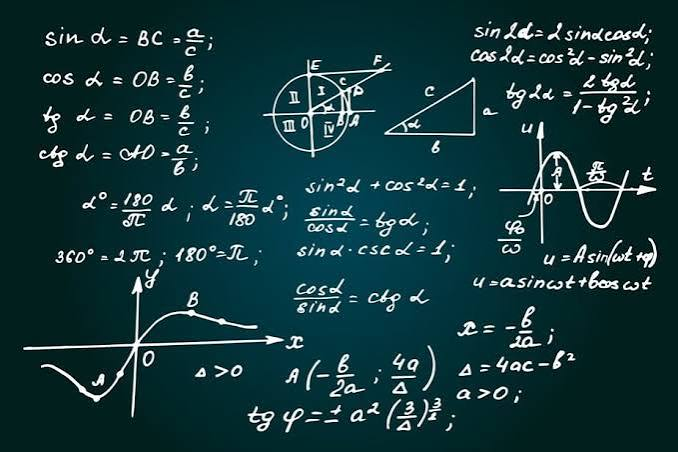

A student once asked why engineers can design bridges that hold thousands of people and why banks can predict financial risks. The answer was Mathematics. Behind many of the world's greatest inventions, technologies, and discoveries is the ability to solve problems using mathematical thinking. Elective Mathematics helps students develop that powerful skill.
Elective Mathematics is an advanced branch of mathematics designed for students interested in science, engineering, technology, economics, statistics, finance, and other analytical fields. It develops logical reasoning, quantitative analysis, and problem-solving skills.
As an SHS student, you may study topics such as:
Elective Mathematics can lead to careers such as:
Many students think Elective Mathematics is only for passing exams. In reality, it is one of the most valuable subjects for the modern world. The fields of artificial intelligence, machine learning, finance, engineering, economics, cybersecurity, and data science all depend heavily on mathematical thinking. Students who become comfortable with mathematics often find themselves with access to a wider range of opportunities.
This is only a small introduction. If you want to understand how programmes connect to university courses, careers, opportunities, and future success, get a copy of:
The guide designed to help students make informed decisions about their future and discover opportunities they may never have considered.